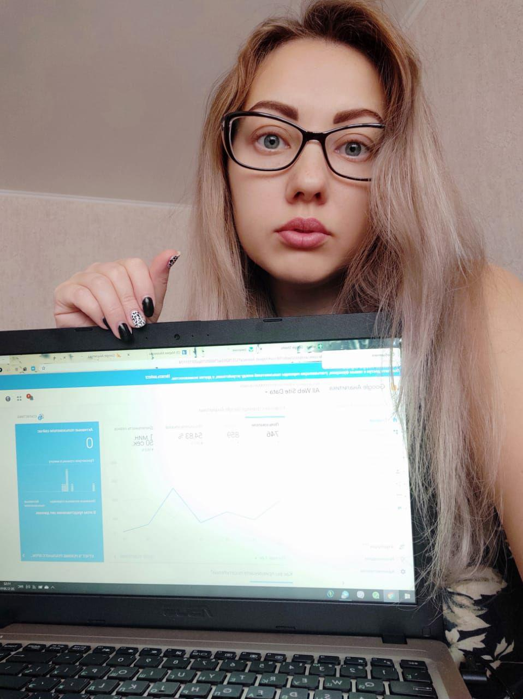

<section class="container-fluid pt-4 pb-4 pt-md-5 pb-md-5"><div class="container pt-2 pt-md-3"><div class="row"><h1 class="h4_blue mb-2 mb-md-3 mb-lg-4 mt-2 mt-md-3 mt-lg-4 m-auto">Google TOP1 Продвижение сайтов</h1></div></div><div class="container pt-2 pt-md-3"><div class="wrap_img_bg pos-r"><div class="white_in_bleack pos-a p-3 p-3" style="top:0;left:0;"><h5 class="white">ПРОГРАММА</h5><ul style="list-style-type:circle;"><li>Экскурсия в GOOGLE</li><li>Поисковые движки</li><li>Аудитория вашего сайта. Продвижение по вашим запросам</li><li>Оптимизация</li><li>Ключевые слова</li><li>Создание сайта</li><li>Создание контента ссылок</li><li>Влияние социальных сетей на поиск и рейтинг</li><li>Вертикальный поиск</li><li>Отслеживание результата и объем успеха</li><li>Устранение неполадок. Изменение домена</li><li>Поисковая оптимизация</li><li>Аутсортинг? Оптимизация? Или оба метода хороши?</li><li>Эволюция поиска</li></ul><p>ДО 10 ЧЕЛОВЕК В ГРУППЕ</p><p>300 ЗАНЯТИЙ ОНЛАЙН</p><p>ОБУЧАЮТ ПРОГРАММИСТЫ</p></div></div></div></section>